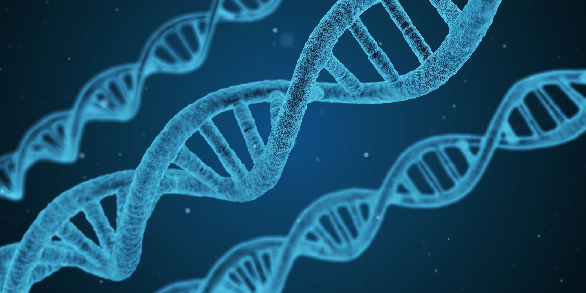
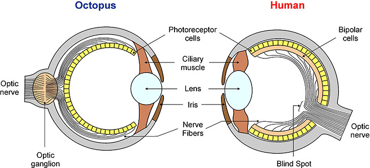
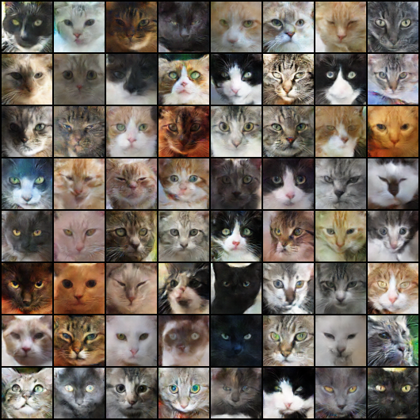
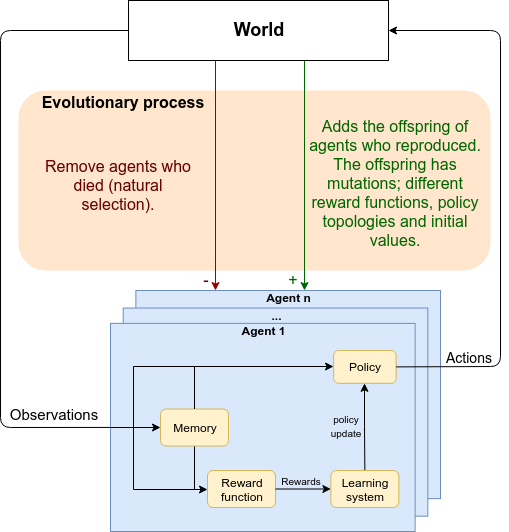
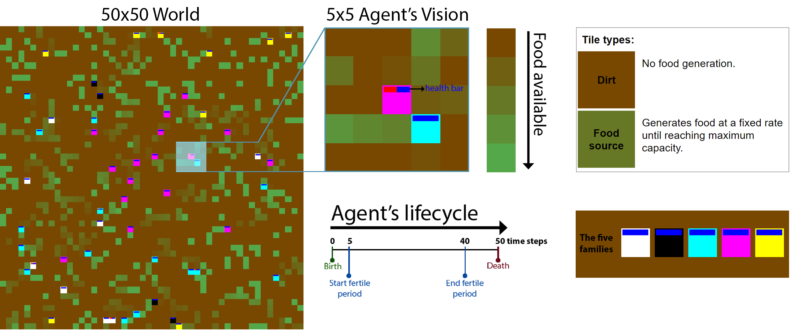
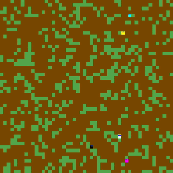
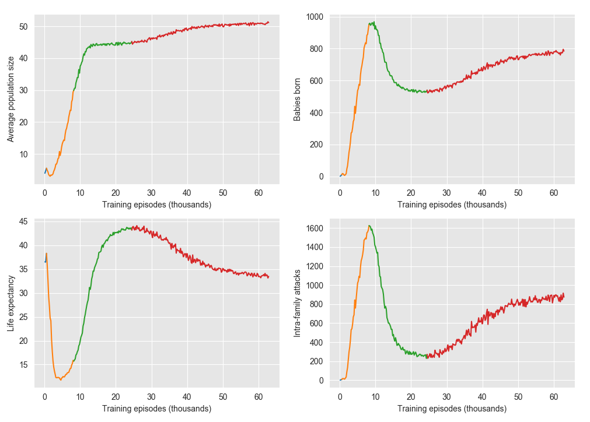
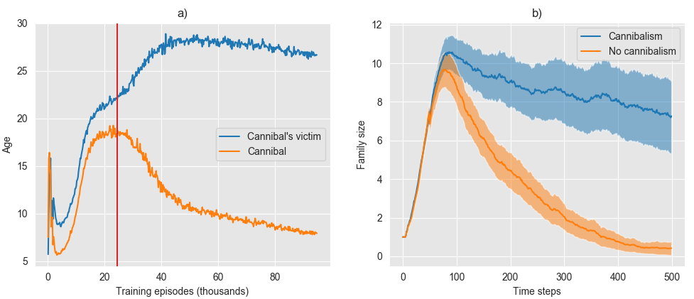

Mimicking Evolution with Reinforcement Learning
Published on 2019-09-01
Simulating evolution in a nature-like environment is key to understanding how our own intelligence came to happen. In this post we show how reinforcement learning can speed up the search for agents with increasing evolutionary success. We use our proposed algorithm in two bio-inspired environments and unravel two interestingly dark evolutionary histories.

Introduction
Evolution is the only process we know of today that has given rise to general intelligence (as demonstrated in animals, and specifically in humans). This fact has been inspiring artificial intelligence (AI) researchers to mimic biological evolution in computers for a long time. To increase the pace of research discoveries, we need better tools and more efficient computational methods to mimic evolution. In fact, having these tools would not only have a major impact in AI research but they would speed up research across a multitude of other fields. The study of different types of replicators (the entities which are subject to evolutionary pressure, such as genes, ideas, business plans and behaviours) and their specific mechanisms for replicating makes up the core foundation for different research fields (such as biological evolution, mimetics, economics and sociology). These fields are based on a single universal truth: replicators that are better at surviving and self-replicating increase in numbers faster than their less capable peers. When these replicators are competing for a common limited-resource, the less capable ones eventually disappear leaving the more capable peers to dictate the world’s future.
Table of contents:
- A Promising Path for AGI based on Convergent Evolution
- The Success of Arms Race as a Tool for AI Research
- Reinforcement Learning to Maximise Evolutionary Fitness
- The Bacteria Colony
- Results: The Colony's History (do not miss this section - it's the most fun!)
A Promising Path for AGI based on Convergent Evolution
Here, we introduce a promising methodology for progress in AI, inspired by convergent evolution (CE). CE occurs when different species independently evolve similar solutions to solve similar problems. For example, the independent evolution of eyes has occurred at least fifty times across different species — as if when living in an environment with light, it becomes inevitable to see it.
 Figure 1. There is an evident similarity between the octopus and the human eye despite their completely different evolutionary origin. Our common ancestor lived 750 million years ago, and it is believed to have had only a simple patch of tissue that could do little more than detecting the absence or presence of light. Curiosity: The octopus eye seems to be slightly better designed than ours because it has no blind spot! Our eye has no photoreceptor cells in a region where the nerve fibers need to pass through to go to the optic nerve.
Additionally, there is now compelling evidence that complex cognitive abilities such as love, friendship and grief have been independently evolved in social species such as elephants, dolphins, whales and humans to solve the problems that occur when individuals interact frequently with members of the same species[1] — as if when living in a social environment, it becomes inevitable to develop the cognitive abilities to better cope with this environment. For social animals, the interactions with members of their species become an important feature of their environment. Once a species transitions from non-social to social living, it enters a feedback loop where its genes affect its social interactions and its social interactions affect the genes being selected for the future offspring. This feedback loop can lead to a quick convergence onto an optimal solution.
Convergent evolution says that similar problems lead to similar solutions. We argue that to evolve artificial life and have it converge to similar cognitive abilities as the ones found in nature, we need to subject artificial agents to the same problems life finds in nature. To do this, we need two things: bio-inspired agents and bio-inspired environments. In nature, agents have an enormous amount of adaptability. A modified DNA can alter what an animal can sense and do by changing the animal’s body (its sensors and actuators). It can alter how an animal learns by modifying its reward system and its brain architecture. Lastly, it can also alter what knowledge the animal is born with by changing its instincts (its innate behaviours). The degree of adaptability of living beings together with the level of freedom provided by their natural environment enables the growth of a wide variety of complex beings. Achieving these levels of freedom and adaptability in simulation is not feasible. We have to cut corners. Our goal is to reduce the adaptability degree of our agents and their environment freedom but still be able to evolve complex cognitive abilities similar to the ones found in nature. We believe that the following methodology is a promising path for progress in AI:
- Design simplified bio-inspired agent(s) to live in a simplified bio-inspired environment.
- Evolve these agents.
- Compare the artificial behaviours obtained with the natural behaviours observed in the natural environment that served as inspiration.
- If there is a mismatch, formulate a hypothesis that might explain it. Did the mismatch occur due to an oversimplification of the agent’s body (sensors and actuators)? Was it due to its brain architecture or its reward system? Was the environment misrepresented? Repeat from step 1 to test the new hypothesis.
The idea of using first principles to build generative models, collect data from simulations and compare it to data from the real world, was first advanced by Axelrod in 1997[2] and baptized as the third way of doing science.
Important distinction between agents and replicators
The distinction between an agent and a replicator is key to understanding this post. The replicator is the unit of evolution, and an agent carries one or more replicators. In biology, evolutionary pressure occurs at the gene level, not at the level of the individual. In this case, the replicator is the gene, and the agent is the animal, plant, bacteria, and so on. Richard Dawkins, in his book The Selfish Gene[3], has famously described our bodies as throwaway survival machines built for replicating immortal genes. To evolve biological-like behaviours is crucial that we evolve replicators and not individuals — anything else will yield unnatural behaviours.
The Success of Arms Race as a Tool for AI Research
(if you are already familiar with the concept of arms race in the context of AI research you can skip this section)
Recently, impressive results in Artificial Intelligence have been achieved by having neural networks competing against each other in simulated games (OpenFive[4], AlphaZero[5], Generative Adversarial Network (GAN)[6]). In fact, an arms race is created every time we have adaptable entities competing. The arms race is responsible for the continued emergence of ever new innovative and sophisticated capabilities necessary to outcompete adversaries. For example, a GAN trains two neural networks by making them compete against each other. One network, the discriminator, tries to distinguish real data from fake data produced by the other network, the generator. The generator’s goal is to fool the discriminator into thinking the fake data it generates is real. The discriminator is trained by seeing multiple labelled examples of the real and the fake data, whilst the generator is trained by seeing the impact its output has in the discriminator’s decision. This competition of adaptable systems creates an arms race. For instance, when a GAN is being trained to generate images of cats, every time the discriminator learns a new feature that is able to distinguish real cats from fake cats, like learning that real cats have whiskers, the generator learns that to convincingly fool the discriminator it has to generate images of fake cats with the discovered feature (e.g. whiskers). Similarly, arms race occur in the algorithms that trained superhuman AI agents to play Chess, Go and Dota.
 Figure 2. Fake images of cats generated by a GAN. Image by courtesy of Alexia Jolicoeur-Martineau.
Biological evolution is also a constant arms race. When a predator learns how to see better, the prey learns how to hide better — by developing camouflage, for example. Many of the techniques developed for training agents in competitive environments can be used to train bio-inspired agents in bio-inspired environments. In this line of research, OpenAI has recently developed Neural MMO[7], a simulated environment that captures important properties of Life on Earth. In Neural MMO artificial agents, represented by neural networks, need to forage for food and water to survive in a never-ending simulation. Currently, they presented results for agents who use RL to maximise their survival, instead of maximising the survival and reproduction success of a replicator as it happens in nature.
We build on top of this work and add three important contributions: we introduce replicators (genes), give our agents the ability to reproduce, and design an RL algorithm that increases agents capability to maximise their genes survival and replication success.
Reinforcement Learning to Maximise Evolutionary Fitness
Evolutionary pressure acts on the replicator level, but reinforcement learning acts on the agent level. RL can be aligned with the evolutionary process by noting what evolution does to the agents through its selection of replicators: evolution generates agents with increasing capabilities to maximise the survival and reproduction success of the replicators they carry. So that's what our RL algorithm should do as well.
From the replicator’s perspective, the evolutionary process is a constant competition for resources. However, from the agent’s perspective, the evolutionary process is a mix between a cooperative exercise with agents that carry some of its replicators (its family) and a competition with unrelated agents. Evolution pressures agents to engage in various degrees of collaboration depending on the degree of kinship between them and the agents they interact with (depending on the amount of overlap between the replicators they carry). This pressure for cooperation amongst relatives was named kin selection, and was informally summarised by J.B.S. Haldane that has jokingly said "I would gladly lay down my life for two brothers or eight first cousins" (alluding to the fact that in humans, and other diploid species, siblings have on average half of the genes identical by descent, whilst first cousins have on average one eighth, therefore, from the genes perspective sacrificing an individual to save two siblings or eight first cousins is a fair deal, evolutionary speaking).
These incentives can be described in a simple reward function. To make the language easier, let’s call our unit of replication a gene as it happens in biology. At each point in time, if we take all the genes from every agent and put them in a pool, we get the gene pool. With these two definitions in mind, our proposed reward function can be simply stated: each agent wants to maximise the number of times its genes appear in the gene pool.
Mathematically, the reward of agent at time is the sum of the kinship (number of common genes) between agent and every other agent that is alive at time (). This simple reward has a tricky part! When the agent dies it receives a final reward that is an estimate of the sum of future number of times its genes will appear in the gene pool (you’ll have to check our paper for more details on how to compute this).
The agents are therefore incentivised to survive and replicate. They are also incentivised, to help other agents carrying common genes (their family) to survive and replicate; and to make sure that when they die their family is in a good position to carry on surviving and replicating.
By now you might be wondering what the heck is going on? Is this evolution? Is it learning? Well, it’s both. Evolution acts slowly, across generations, and amongst other things, it defines what agents learn by changing their internal reward function (diagram 1). Learning acts fast, across one’s lifetime. It quickly updates agents’ policy to maximise pleasure and minimise pain. We say that a reward function is aligned with evolution when the maximisation of the reward leads to the maximisation of the agent’s fitness. Evolution slowly aligns the reward function, however, as agents evolve the fitness landscape changes and with it the misalignment between reward and fitness increases. It is extremely computational expensive to replicate these two processes in simulation. However, this work allows learning to single-handedly drive the search for policies with increasingly evolutionary fitness by ensuring the alignment of the reward function with the fitness function. We can do this because our reward is extrinsic to the agent, it’s given by God, and therefore, only possible within a simulation. Moreover, RL searches for policies with increasing evolutionary success by making use of the whole action-state trajectories that agents go through their lifetime. In contrast, current evolutionary algorithms discard this information and consequently limit their potential efficiency at tackling sequential decision problems.
 Diagram 1. There are two different mechanisms driving the development of the brain: evolution (across generations) and learning (across one’s lifetime).
The Bacteria Colony
 Figure 4. The Bacteria Colony.
The bacteria colony (named the asexual environment in our paper) is a 2-dimensional grid world, which is initialised with five agents carrying five unique DNAs (figure 4). At each time step, each agent may move one step and produce an attack to another agent in an adjacent tile. When an agent moves to a tile with food it collects all the food available in it. If an agent chooses to produce an attack, it decreases its victim’s health by one point, if the victim’s health reaches zero it dies and 50% of its collected food is captured by the attacker. The food is used to survive (one unit of food must be consumed every time step to remain alive), and to reproduce. When agents are within their fertile age and they have stored enough food, they reproduce themselves asexually and give birth to an agent carrying an exact copy of their DNA. Each DNA has only a single gene and there are no mutations.
 Figure 5. Some of the evolved policies in action. The map boundaries are connected (e.g. a bacterium that moves over the top goes to the bottom part of the map). Curiosity: see how the yellow species displays an entirely different strategy for foraging; this behaviour is explained in our paper.
The policy
Each agent observes a 5x5 square crop of the surrounding state (figure 4). The agent sees six features for every visible tile; i.e. the input is a 5x5x6 tensor. This includes two features corresponding to tile properties (food available and whether it is occupied or not) and four features corresponding to the occupying agents’ properties (age, food stored, kinship and health). Besides these local inputs, each agent also observes its absolute position, family size and the total number of agents in the world. We intend to remove these extra inputs in future work as we provide agents with memory. The neural network has ten outputs (five movement actions with no attack and five movement actions with an attack), and a its architecture is simply composed by three fully connected layers with 512, 256 and 128 units correspondingly.
Results: The Colony’s History
In this section, we unfold the evolutionary History of the Bacteria Colony and narrate its key events. Then, we delve into the details of the evolved behaviours.
The Colony’s History
In the very beginning, God created Adam, Boltzmann, Claude, Darwin and Eve. These first bacteria were meant to populate the world, but they could hardly find the necessary resources to survive, let alone reproduce. Despite that, they evolved. You see, in this world, evolution works differently. God is watching every move of every being and reinforcing (or inhibiting) beneficial (or detrimental) behaviours for survival and self-replication.
Soon the bacteria got better at resource gathering and survival, stretching their life span up to 38 iterations (figure 6.c, era I - small blue line)! With improved techniques for gathering, each bacterium was able to collect more and more food. Until one day, a miracle happened...
Eve was so fed up with food that it split into two! Our empty, lonely world progressively started to fill up. The birth rate was skyrocking, the population was booming (figures 6.a and .b, era II - orange line)! Nonetheless, our bacteria started to live a more dangerous and shorter life (figure 6.c and .d, era II). You see, they had been evolving in a lonely world and didn’t yet know how to interact with other members of their family.
In the past, there were brief encounters amongst the five founding bacteria. In one of these encounters, Adam felt an urge to try something new and terrible (God had designed these urges, he called them an explorative step, epsilon-greedy in his words)... Adam attacked Darwin to death and ate its corpse. Oh and how that corpse was nutritious! Those nutrients allowed Adam to survive further than anyone else had survived before. God was watching and reinforced this violent behaviour! After a few more of these encounters, all that bacteria knew about each other was violence...
Fast forwarding to our first miracle. When Eve saw its first newborn baby, it did not recognise it as its own. Eve only knew violence and its newborn baby, who had inherited the same brain, had the same instinct. Intra- and Inter-family violence rapidly increased along with the population size, pushing lifespan to its minimum. God did not know what to do with this. Some bacteria had felt the urge to be kind and merciful towards others in a few situations, but they would quickly regret it. Others would happily take advantage of the kind species, obtaining an easy meal and driving competition to extinction.
This ever-increasing circle of violence had its peak around the training episode ten thousand. At this point, bacteria started to slowly notice something special about their own family. They looked slightly different from the other bacteria. This feature had always been there, but their brain had not been able to notice it. At first, this perception was faint and blurred, but with time, it became obvious: they could now detect their kin. This allowed for selective kindness and selective violence and, for the next ten thousand training episodes, intra-family violence decreased, taking lifespan to its all-time maximum (era III). With each bacterium staying around for longer, there weren’t enough resources to keep up with the exorbitant birth rate of the past. The birth rate slowly decreased to almost half its previous peak.
Around the thirty thousand training episode, the unexpected occurs. Intra-families attacks started to rise again! However, this time, the attacks were different; they were more targeted and received less resistance. It seemed that the old and infertile bacteria had found a way to leave an inheritance to the younger generation. Through cannibalism, the young bacteria were able to inherit some of the sugar reserves of the older generation. Allocating the family sugar to the fitter generation allowed for an increase in the population size with the cost of a shorter life span.
The bacteria had come a long way from random behaviour all the way to learning how to sacrifice themselves for the greater good of their family. God was pleased and paused the simulation.
 Figure 6. Macro-statistics obtained in a test environment using the policies trained for a certain number of training episodes. Every 200 training episodes, we run 20 test episodes with a length of 500. The training episodes had a length between 450 and 550. The different colours correspond to the different eras; I: learning to survive (barely visible), II: learning to reproduce, III: learning to detect kin, IV: learning to self-sacrifice.
Cannibalism and suicide as a tool for gene survival
In era IV, we saw the rise of cannibalism practiced by young bacteria on older bacteria. Figure 7.a) shows how the average age of cannibals and their victims grows apart in this era. This allowed for an increase in population, but how did it affect the survival and reproduction success of a given family?
To answer this question, we measured the family size of a certain family when its members were not allowed to attack each other and compared it with the normal situation where intra-family attacks were allowed (see figure 7.b).
 Figure 7. a) The average age of intra-family cannibals and cannibals’ victims. The vertical red line marks the start of era IV. b) the size of family 1 averaged along 90 test episodes. To compute the orange line we simply blocked all the attacks between members of the family 1. The shaded bands represent the 95% confidence interval. Note: The best thing about doing experiments inside simulations is that you can always run more experiments to reduce the error bars!
Figure 7 clearly shows that cannibalism is essential for long-term gene survival. We also ran this exact experiment before era IV and achieved the opposite results. This shows that before era IV the bacteria didn’t yet know how to use cannibalism to their gene’s advantage (results not shown).
Final words

We’ve successfully used an RL algorithm that trains agents to maximise the survival and reproduction success of their genes!
In our paper, we compare our algorithm with a popular evolutionary algorithm. We also evolve agents on a sexual environment, where agents reproduce sexually causing a fundamental change in the way agents cooperate with each other.
We intend to build on top of this work. Following our proposed methodology for progress in AI, we will research the minimum set of requirements to emerge natural cognitive abilities in artificial agents such as identity awareness and recognition, friendship and hierarchical status.
Would love to hear your feedback on this work, send me an email or message me on twitter :)
Acknowledgements
The paper behind this blogpost was written with my co-authors Arnaldo Abrantes and Frans Oliehoek.
I would like to thank Arthur Juliani, Nathan Benaich, Joseph Suarez and Fredrik Norén for reading and improving an early version of this post.
A special thanks to my father, Arnaldo Abrantes, for the stimulating conversations throughout my life making me passionate about complex systems, intelligence and science in general.
All errors, omissions and imprecisions remain my own.
References
[1] Christakis, Nicholas. "BLUEPRINT The Evolutionary Origins of a Good Society." (2019)
[2] Axelrod, Robert. "Advancing the art of simulation in the social sciences." Simulating social phenomena. Springer, Berlin, Heidelberg, 1997. 21-40.
[3] Dawkins, Richard. The selfish gene, 1976.
[4] OpenAI. Openai five. https://blog.openai.com/openai-five/, 2018
[5] Silver, David, et al. "A general reinforcement learning algorithm that masters chess, shogi, and Go through self-play." Science 362.6419 (2018): 1140-1144.
[6] Goodfellow, Ian, et al. "Generative adversarial nets." Advances in neural information processing systems. 2014.
[7] Suarez, Joseph, et al. "Neural MMO: A Massively Multiagent Game Environment for Training and Evaluating Intelligent Agents." arXiv preprint arXiv:1903.00784 (2019).